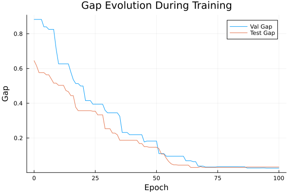
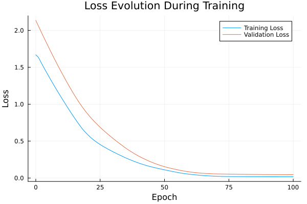

Basic Tutorial: Training with FYL on Argmax Benchmark
This tutorial demonstrates the basic workflow for training a policy using the Perturbed Fenchel-Young Loss algorithm.
Setup
using DecisionFocusedLearningAlgorithms
using DecisionFocusedLearningBenchmarks
using MLUtils: splitobs
using PlotsCreate Benchmark and Data
b = ArgmaxBenchmark()
dataset = generate_dataset(b, 100)
train_data, val_data, test_data = splitobs(dataset; at=(0.3, 0.3, 0.4))(DecisionFocusedLearningBenchmarks.Utils.DataSample{@NamedTuple{}, @NamedTuple{}, Matrix{Float32}, Vector{Float32}, Vector{Float32}}[DataSample(x=Float32[-1.89364 -1.14128 … 0.30416 -0.964234; 0.419658 -0.736633 … 0.0417915 1.02284; … ; 1.02152 -0.907035 … 0.142604 1.24368; 0.0179993 -1.16427 … 0.853023 0.581587], θ=Float32[-0.212732, 0.619079, 0.898966, -2.15675, -0.350607, -0.0474712, -1.84619, 1.74576, 0.209508, 0.588294], y=Float32[0.0, 0.0, 0.0, 0.0, 0.0, 0.0, 0.0, 1.0, 0.0, 0.0]), DataSample(x=Float32[-0.216457 -0.596872 … 0.733155 -0.780557; -0.116031 -0.00818253 … -0.913338 0.280772; … ; 1.11648 1.08037 … -0.764727 0.882326; 0.0240094 0.263182 … 0.331202 3.67052], θ=Float32[-0.58806, -0.73171, -0.640457, 0.443441, 2.3133, 0.958866, -0.532433, -0.384022, -1.49976, -1.62942], y=Float32[0.0, 0.0, 0.0, 0.0, 1.0, 0.0, 0.0, 0.0, 0.0, 0.0]), DataSample(x=Float32[0.491023 -0.2948 … 0.143458 1.29695; -1.82359 0.846021 … -0.679959 0.995417; … ; -0.918312 0.342489 … -1.13504 -0.622467; -0.406449 1.09878 … -1.75647 0.151378], θ=Float32[-0.706295, -0.0160092, 0.945982, 0.948126, 0.403148, 1.58033, 0.519668, -0.209615, -0.0150242, 1.02571], y=Float32[0.0, 0.0, 0.0, 0.0, 0.0, 1.0, 0.0, 0.0, 0.0, 0.0]), DataSample(x=Float32[-2.27344 0.977512 … -0.909893 -2.00259; 0.710452 0.0607204 … 1.68821 -1.16765; … ; -0.700345 1.27526 … 1.20993 1.53473; 0.954531 1.30751 … 0.180688 -0.339703], θ=Float32[-1.09712, -0.33527, -0.805224, 1.0106, -0.0527262, 0.662675, 0.311479, -0.34282, 0.746896, -0.355067], y=Float32[0.0, 0.0, 0.0, 1.0, 0.0, 0.0, 0.0, 0.0, 0.0, 0.0]), DataSample(x=Float32[2.18345 -0.0173535 … -0.150509 0.40015; -0.346912 0.410796 … -0.353472 -0.0163177; … ; 0.691787 0.423967 … -0.172558 -0.281905; -0.144928 0.514545 … -0.54447 0.0974257], θ=Float32[0.930572, -0.379202, 0.376349, 1.24824, -0.779445, -1.23983, -0.703485, -0.699462, -0.0366011, 0.062582], y=Float32[0.0, 0.0, 0.0, 1.0, 0.0, 0.0, 0.0, 0.0, 0.0, 0.0]), DataSample(x=Float32[-0.2941 -1.73325 … -0.588585 -0.189874; 0.0405977 1.91148 … -0.845395 -0.672969; … ; -0.732598 0.900049 … 2.10218 -0.202547; -2.373 -1.09282 … 0.551238 0.928861], θ=Float32[1.26044, 1.07196, 0.316021, -1.30032, 1.15709, 1.29778, -0.904472, -0.485192, -0.281116, -0.827979], y=Float32[0.0, 0.0, 0.0, 0.0, 0.0, 1.0, 0.0, 0.0, 0.0, 0.0]), DataSample(x=Float32[0.827064 1.46037 … 0.685508 1.90595; 0.0706925 1.33533 … -0.260962 -0.1023; … ; -0.571428 0.032592 … 1.41835 -0.650576; 0.307306 -1.52493 … -1.96259 -0.392872], θ=Float32[-0.0686397, 1.73032, -0.444402, -0.144972, -0.165328, -0.50499, 0.224396, 0.0126781, 0.928641, -0.0984732], y=Float32[0.0, 1.0, 0.0, 0.0, 0.0, 0.0, 0.0, 0.0, 0.0, 0.0]), DataSample(x=Float32[-0.0424613 1.10513 … 0.0821915 -0.572355; -1.40325 -0.144135 … 1.9984 -0.272888; … ; -0.835827 -0.834912 … 0.387794 0.736335; 0.375163 2.30339 … -0.672319 0.824344], θ=Float32[-1.07397, -0.856477, 0.363295, -0.148402, -0.232384, 0.0328027, 0.499974, -0.813679, 1.47661, -0.994207], y=Float32[0.0, 0.0, 0.0, 0.0, 0.0, 0.0, 0.0, 0.0, 1.0, 0.0]), DataSample(x=Float32[-0.231 0.994158 … -0.193853 0.203901; -0.717744 1.48827 … 0.224652 -0.224272; … ; -1.26264 -1.94944 … -0.157824 0.886877; -0.663256 1.23771 … 0.303085 0.606914], θ=Float32[-0.843524, -0.291684, 0.751787, -0.968583, -1.32315, 1.50927, 1.3499, -0.518643, 0.54128, 0.71666], y=Float32[0.0, 0.0, 0.0, 0.0, 0.0, 1.0, 0.0, 0.0, 0.0, 0.0]), DataSample(x=Float32[-1.33406 -0.197455 … 0.626784 -2.67493; 0.706324 -0.53094 … -0.713529 0.894655; … ; 1.1594 -0.953882 … 1.71714 -0.309651; -1.52237 -0.261847 … 0.165908 0.337946], θ=Float32[1.34034, -0.244844, -0.419268, -1.16134, -0.0108497, -0.028048, 1.38429, 1.26816, 0.549804, -0.93574], y=Float32[0.0, 0.0, 0.0, 0.0, 0.0, 0.0, 1.0, 0.0, 0.0, 0.0]) … DataSample(x=Float32[0.597987 -1.83809 … -1.16428 1.79255; -0.28947 -0.491214 … -0.736033 -1.46787; … ; -0.200817 1.97721 … -0.0988395 -0.50361; -0.444454 0.22798 … -1.01155 -0.332042], θ=Float32[0.101178, -0.390595, -0.359308, 0.457563, -0.245913, 0.786722, 1.14704, -0.296443, -0.121689, 0.384979], y=Float32[0.0, 0.0, 0.0, 0.0, 0.0, 0.0, 1.0, 0.0, 0.0, 0.0]), DataSample(x=Float32[1.75775 -0.229914 … 0.517471 1.47284; 1.18859 0.0292568 … 0.688346 -0.0418369; … ; 0.0389148 -0.827425 … -0.19727 1.31042; -1.02516 -1.00329 … 0.7034 -2.29703], θ=Float32[0.979001, 0.591159, -0.60947, -1.42809, 0.413556, 0.843516, -0.425511, -1.00378, 0.275486, 2.12746], y=Float32[0.0, 0.0, 0.0, 0.0, 0.0, 0.0, 0.0, 0.0, 0.0, 1.0]), DataSample(x=Float32[0.132167 2.75625 … -0.462409 0.430864; 0.9005 -1.27724 … -0.518516 0.565729; … ; 0.0539364 0.0172692 … 0.850897 -1.12191; -0.930779 0.0816792 … -1.20273 -1.14199], θ=Float32[1.14502, 0.304375, -1.54985, -0.461187, -1.33205, 0.162211, 0.396933, -0.40729, 0.660153, 0.47405], y=Float32[1.0, 0.0, 0.0, 0.0, 0.0, 0.0, 0.0, 0.0, 0.0, 0.0]), DataSample(x=Float32[0.589174 -0.275978 … 0.474401 -0.566241; -0.422962 0.829028 … 0.262626 -0.82721; … ; 1.69802 0.298904 … 0.378158 -0.0402742; 0.0896661 -0.393543 … -0.501386 -0.310395], θ=Float32[0.590341, 0.442861, 0.98547, -0.277781, -0.227222, -1.17377, -0.380287, 0.753271, 0.507571, -0.334856], y=Float32[0.0, 0.0, 1.0, 0.0, 0.0, 0.0, 0.0, 0.0, 0.0, 0.0]), DataSample(x=Float32[-1.20001 -1.0229 … -2.24341 -0.00752268; 1.27949 1.55178 … -1.42294 0.282416; … ; -1.30278 1.34626 … 1.11707 0.769245; 0.507303 -0.312929 … 0.56512 -0.557264], θ=Float32[-0.378885, 1.31827, -0.272198, -0.734791, -0.557018, 1.15555, -1.00584, -0.0733109, -1.59339, 0.425135], y=Float32[0.0, 1.0, 0.0, 0.0, 0.0, 0.0, 0.0, 0.0, 0.0, 0.0]), DataSample(x=Float32[-2.03222 0.144928 … 0.820047 1.27223; 1.32316 -0.755858 … 0.323229 0.262905; … ; -0.211992 -0.123902 … 1.05522 -0.732317; 0.72461 0.500979 … 0.146759 0.813521], θ=Float32[-0.291672, -1.61525, 0.901326, -1.18294, -1.1336, 0.627997, -0.61452, 0.816436, 1.59274, -0.682085], y=Float32[0.0, 0.0, 0.0, 0.0, 0.0, 0.0, 0.0, 0.0, 1.0, 0.0]), DataSample(x=Float32[0.175719 2.44994 … 1.29566 -0.493106; 0.851356 -1.01255 … -1.03246 0.799552; … ; -0.74018 -2.03537 … -0.14977 -0.0885664; 0.345355 0.110885 … 1.57794 -0.192704], θ=Float32[0.629848, -0.5604, -0.75, -1.10302, 0.740617, -0.790104, -0.504459, 1.25862, -1.45325, -0.0589248], y=Float32[0.0, 0.0, 0.0, 0.0, 0.0, 0.0, 0.0, 1.0, 0.0, 0.0]), DataSample(x=Float32[-2.3121 -0.426956 … 0.100575 -0.0537167; 1.52936 -1.15584 … 0.744752 -1.01783; … ; 0.613921 0.210191 … -1.68203 0.34115; 0.538793 0.230765 … 1.01552 -1.06764], θ=Float32[-0.410974, -0.571475, 0.596969, 1.39147, -2.09218, 0.814316, 1.25712, -1.12017, -0.47693, 1.14642], y=Float32[0.0, 0.0, 0.0, 1.0, 0.0, 0.0, 0.0, 0.0, 0.0, 0.0]), DataSample(x=Float32[-0.516067 0.059572 … 0.861775 1.40846; -1.7923 -0.421534 … 1.29989 -1.03697; … ; -0.0860735 1.05514 … -0.44082 -1.49367; -0.00524025 -0.352446 … -1.01639 0.183868], θ=Float32[-1.16722, 0.183948, 0.255851, 0.645773, 0.349388, -0.411334, -0.212003, -0.463459, 0.935083, -1.22748], y=Float32[0.0, 0.0, 0.0, 0.0, 0.0, 0.0, 0.0, 0.0, 1.0, 0.0]), DataSample(x=Float32[1.10486 0.233508 … 0.305791 -1.17988; -3.17554 0.479217 … -0.35008 -0.861073; … ; 1.51159 -0.512968 … 0.011206 -1.98759; -0.0348302 -1.0839 … 0.265399 -1.1686], θ=Float32[-0.494944, 1.45816, -0.992465, -0.33774, -0.353509, 1.95834, 0.195311, -1.37695, -1.02617, -0.656614], y=Float32[0.0, 0.0, 0.0, 0.0, 0.0, 1.0, 0.0, 0.0, 0.0, 0.0])], DecisionFocusedLearningBenchmarks.Utils.DataSample{@NamedTuple{}, @NamedTuple{}, Matrix{Float32}, Vector{Float32}, Vector{Float32}}[DataSample(x=Float32[-0.405203 -0.738652 … -0.553692 1.18452; -0.216858 1.18999 … -0.707061 0.977098; … ; 1.04706 -0.798969 … 0.388267 -0.151633; -0.296222 -1.08913 … 0.416422 -0.708507], θ=Float32[0.0165839, 0.978876, -0.150785, -1.292, 0.586092, 1.23971, 0.294635, 0.314026, -0.0855111, 0.781524], y=Float32[0.0, 0.0, 0.0, 0.0, 0.0, 1.0, 0.0, 0.0, 0.0, 0.0]), DataSample(x=Float32[-0.730593 -0.435369 … -0.675706 1.45403; -0.23775 0.662799 … -2.02393 -1.13756; … ; 0.795826 0.457848 … -1.67085 1.87652; -1.60621 -0.92393 … -1.10703 -0.00355883], θ=Float32[0.49445, 0.25676, 2.42871, -2.06734, -0.536753, 0.725436, -0.728718, 0.110925, -1.00947, 0.0543183], y=Float32[0.0, 0.0, 1.0, 0.0, 0.0, 0.0, 0.0, 0.0, 0.0, 0.0]), DataSample(x=Float32[0.742018 -1.29598 … 0.30824 -0.672042; -1.33387 1.10282 … 1.13016 0.289472; … ; 0.238054 0.614353 … 1.88136 0.636572; -0.193918 -0.103542 … 0.349736 -0.421375], θ=Float32[0.118139, 0.573007, 0.0775755, 0.629545, -0.289077, -0.497557, -1.45297, -1.14733, 0.551085, 0.533443], y=Float32[0.0, 0.0, 0.0, 1.0, 0.0, 0.0, 0.0, 0.0, 0.0, 0.0]), DataSample(x=Float32[-0.488398 -1.51889 … 2.71194 -1.17087; -0.260306 -2.14333 … 0.881569 0.39751; … ; 0.679948 -0.481345 … -1.27929 0.283278; 0.134331 -0.485655 … 1.04399 -1.01033], θ=Float32[-0.174175, -1.16385, -0.840197, -0.728, 1.58684, -0.66438, -0.0778858, -1.24272, -0.387184, -0.422052], y=Float32[0.0, 0.0, 0.0, 0.0, 1.0, 0.0, 0.0, 0.0, 0.0, 0.0]), DataSample(x=Float32[2.45801 0.755331 … 0.852031 -0.17294; 1.27916 -0.697037 … -0.46219 -1.30983; … ; 2.37255 -0.208075 … -0.760741 -0.950625; 0.107083 0.467926 … -0.125377 -2.11813], θ=Float32[2.61129, -0.37192, -1.39477, -0.137035, -0.580553, -1.28714, -0.977399, -0.297866, 0.287837, 1.03106], y=Float32[1.0, 0.0, 0.0, 0.0, 0.0, 0.0, 0.0, 0.0, 0.0, 0.0]), DataSample(x=Float32[-0.339682 -0.390468 … -0.278554 1.28122; -0.631105 -0.307069 … -1.23659 0.672973; … ; -0.40027 1.2947 … 0.127207 0.376377; -0.916537 0.122188 … -0.72105 0.972881], θ=Float32[0.0454547, 0.248675, -0.68828, -2.48655, -0.756706, -0.868688, -0.382583, 0.263541, 0.390234, 0.313145], y=Float32[0.0, 0.0, 0.0, 0.0, 0.0, 0.0, 0.0, 0.0, 1.0, 0.0]), DataSample(x=Float32[-1.20254 -2.13163 … 0.229 0.756545; -0.635865 0.753807 … -1.16048 0.518935; … ; 0.469323 -0.612907 … 0.118735 -0.0867476; -0.741449 -1.22768 … 0.725867 1.0768], θ=Float32[-0.124357, 0.264355, -0.540902, -0.0405024, -0.966728, 1.53234, 1.14354, -1.48785, -0.468828, -0.0741226], y=Float32[0.0, 0.0, 0.0, 0.0, 0.0, 1.0, 0.0, 0.0, 0.0, 0.0]), DataSample(x=Float32[0.0205591 -1.34157 … -0.982115 2.18001; -0.347827 0.671067 … -0.754097 -1.09736; … ; -1.11061 0.849 … 0.805491 0.779872; 0.335453 0.204118 … 0.292731 1.02995], θ=Float32[-0.032977, -0.436912, -0.887183, -0.379478, 1.13617, 0.132066, 0.381471, -0.615928, 0.0168612, -0.417204], y=Float32[0.0, 0.0, 0.0, 0.0, 1.0, 0.0, 0.0, 0.0, 0.0, 0.0]), DataSample(x=Float32[0.24835 0.244474 … -0.319733 -1.48768; -0.634725 -0.879083 … 1.36353 1.49846; … ; 0.184514 -1.10568 … -0.131284 0.248263; -0.536815 -0.70593 … 1.0378 -0.0019758], θ=Float32[-0.759106, -0.610826, 0.764996, 0.303611, 0.64609, -0.500032, -0.338285, 0.712332, 0.1428, 0.110694], y=Float32[0.0, 0.0, 1.0, 0.0, 0.0, 0.0, 0.0, 0.0, 0.0, 0.0]), DataSample(x=Float32[0.284465 0.181709 … 0.0342654 2.75357; -2.35089 -0.435185 … 2.12412 0.179558; … ; 0.383074 -0.517243 … 1.62206 -0.571537; -1.60866 0.0445141 … 1.30991 0.211394], θ=Float32[-0.232549, -0.744343, -0.425923, 0.163775, 0.7631, -0.596011, -1.83569, 0.395071, 0.756136, 0.498042], y=Float32[0.0, 0.0, 0.0, 0.0, 1.0, 0.0, 0.0, 0.0, 0.0, 0.0]) … DataSample(x=Float32[0.183719 -1.84831 … -0.27375 0.975236; 0.06986 0.127255 … 0.58319 -0.341549; … ; 0.049456 0.355909 … 0.864891 1.70398; -0.464066 -1.25065 … -1.56595 -1.14074], θ=Float32[0.279808, 0.343366, -0.944346, -0.0628687, 1.50352, 0.463296, 0.422166, -1.14529, 1.57364, 1.34675], y=Float32[0.0, 0.0, 0.0, 0.0, 0.0, 0.0, 0.0, 0.0, 1.0, 0.0]), DataSample(x=Float32[0.46037 -0.179706 … 0.539734 -0.167; 1.06872 -1.04856 … 1.02799 0.864995; … ; 0.833655 -0.757867 … 0.116886 0.715469; -1.80796 1.43255 … -1.59092 -0.530559], θ=Float32[2.38153, -1.81441, -2.31295, -0.484157, -0.999364, 0.216892, 0.760597, 1.42928, 1.57234, 0.867404], y=Float32[1.0, 0.0, 0.0, 0.0, 0.0, 0.0, 0.0, 0.0, 0.0, 0.0]), DataSample(x=Float32[0.828141 -0.346782 … 0.666032 0.813133; -0.212853 1.80664 … 1.1898 0.413369; … ; -0.0556074 -0.145479 … 0.0352208 0.52413; 0.0248224 1.92013 … 0.564216 0.92096], θ=Float32[0.0377295, -0.18892, 0.97906, 0.681184, -0.759306, -0.210877, -0.249404, 1.02248, 0.679506, -0.121302], y=Float32[0.0, 0.0, 0.0, 0.0, 0.0, 0.0, 0.0, 1.0, 0.0, 0.0]), DataSample(x=Float32[0.679299 -0.623125 … 0.51557 0.121822; 0.370056 -0.0764256 … 0.0678389 0.601685; … ; 0.3429 -0.365855 … 0.296733 -1.58861; 0.600122 -0.700868 … -0.774191 -0.645986], θ=Float32[0.11515, -0.202309, -0.597436, -0.905031, 1.24997, -0.276255, -0.194667, 0.4741, 0.791927, 0.0281302], y=Float32[0.0, 0.0, 0.0, 0.0, 1.0, 0.0, 0.0, 0.0, 0.0, 0.0]), DataSample(x=Float32[-0.466563 0.783406 … 0.354153 0.224934; 1.13182 0.6092 … 0.782589 -0.717966; … ; 1.25996 0.424885 … 0.240441 -0.541993; -1.60851 -0.538302 … -0.0260013 0.0454912], θ=Float32[1.43338, 0.791617, 1.1556, -0.184665, 0.935929, 0.0636246, 0.206684, -0.189556, 0.393805, 0.270252], y=Float32[1.0, 0.0, 0.0, 0.0, 0.0, 0.0, 0.0, 0.0, 0.0, 0.0]), DataSample(x=Float32[0.657244 0.335556 … 0.328879 -1.13964; -0.625628 -0.861229 … 1.65969 -1.31744; … ; 0.11426 1.26069 … -2.15182 0.948988; -2.29524 0.343093 … -1.67371 -0.201577], θ=Float32[1.30675, -0.213535, -0.514389, 0.504905, 0.27473, -0.287781, -0.638961, -0.127462, 1.18158, -0.117892], y=Float32[1.0, 0.0, 0.0, 0.0, 0.0, 0.0, 0.0, 0.0, 0.0, 0.0]), DataSample(x=Float32[0.418593 -0.541989 … -0.789531 -1.05741; -0.616493 -1.93462 … -0.735706 -0.124568; … ; -0.384681 0.023943 … 1.58982 0.496817; -1.12586 -1.87693 … -0.548774 1.3038], θ=Float32[0.316888, -0.242925, -0.79248, -1.31242, 0.192409, -1.47194, -1.39281, 0.295383, 0.828695, -0.419389], y=Float32[0.0, 0.0, 0.0, 0.0, 0.0, 0.0, 0.0, 0.0, 1.0, 0.0]), DataSample(x=Float32[-2.17829 1.099 … -1.93099 0.391015; -0.71599 0.665837 … 0.851277 0.270288; … ; -0.158362 -0.159157 … -1.42994 -1.17054; -0.330838 -0.241654 … -0.515949 2.44262], θ=Float32[-1.00542, 0.957276, -0.361273, 0.00168369, 0.0487211, 0.606206, 1.08356, -0.37759, -0.300513, -1.87851], y=Float32[0.0, 0.0, 0.0, 0.0, 0.0, 0.0, 1.0, 0.0, 0.0, 0.0]), DataSample(x=Float32[0.0618386 -0.595057 … -0.703123 -1.00443; -0.334612 1.5567 … -0.430151 0.223546; … ; -1.35365 -1.05029 … 1.49336 -0.576476; -0.40588 1.18404 … 2.23779 1.53154], θ=Float32[-0.215652, -0.00705063, 0.0866092, 0.781237, 0.607295, 0.416725, 0.452868, 0.804265, -0.966481, -1.16165], y=Float32[0.0, 0.0, 0.0, 0.0, 0.0, 0.0, 0.0, 1.0, 0.0, 0.0]), DataSample(x=Float32[1.76715 1.00728 … 1.83222 0.466107; 0.403011 -1.09915 … -1.99434 -0.141034; … ; -1.31844 0.0374249 … 0.443383 0.274554; -1.18362 -0.592659 … -0.0792239 -0.243259], θ=Float32[1.10304, -0.183152, -0.668849, -0.822823, -0.771939, -0.533994, -0.612928, 2.13864, -0.748245, 0.0310714], y=Float32[0.0, 0.0, 0.0, 0.0, 0.0, 0.0, 0.0, 1.0, 0.0, 0.0])], DecisionFocusedLearningBenchmarks.Utils.DataSample{@NamedTuple{}, @NamedTuple{}, Matrix{Float32}, Vector{Float32}, Vector{Float32}}[DataSample(x=Float32[-0.764158 -0.922788 … -1.2714 -1.72992; 0.295556 1.10522 … -0.169203 0.598918; … ; 0.937294 0.929943 … 3.12853 -0.129251; 1.66908 1.15247 … 1.51986 -1.01742], θ=Float32[-0.0869928, -0.529235, -0.393246, -0.745232, 0.118471, 0.781707, 1.64141, 0.277558, -0.321943, -0.0901585], y=Float32[0.0, 0.0, 0.0, 0.0, 0.0, 0.0, 1.0, 0.0, 0.0, 0.0]), DataSample(x=Float32[-1.19674 0.0907791 … -0.712342 -0.840827; -0.199956 -2.33656 … -0.994476 -1.048; … ; -0.820188 0.405427 … 0.945957 0.344309; -0.992584 0.232766 … -0.250854 -1.06616], θ=Float32[-0.134229, -1.28528, 0.72482, 0.0726038, -0.593713, 1.20473, 0.709484, 0.81498, 0.200099, 0.103418], y=Float32[0.0, 0.0, 0.0, 0.0, 0.0, 1.0, 0.0, 0.0, 0.0, 0.0]), DataSample(x=Float32[1.02551 1.72737 … 0.422505 1.27364; 1.10478 1.98481 … 0.745042 2.30917; … ; 0.400412 -0.119568 … -0.494326 -0.300814; 0.519782 0.365947 … 0.0565962 0.142866], θ=Float32[0.283952, 0.577443, 0.225481, 1.48175, -0.602987, 1.47766, 1.70845, 0.280007, 0.463141, 1.19229], y=Float32[0.0, 0.0, 0.0, 0.0, 0.0, 0.0, 1.0, 0.0, 0.0, 0.0]), DataSample(x=Float32[1.04282 2.62611 … 1.10647 0.434107; -0.702923 -0.558258 … -0.0818706 -0.948125; … ; 0.846563 -0.750342 … 1.44607 -0.454746; 0.152603 0.422491 … 1.32828 -0.436848], θ=Float32[-0.441768, 0.257758, -0.113913, 0.0101243, 0.400076, -1.44148, -0.696304, 0.254932, 0.320533, -0.111918], y=Float32[0.0, 0.0, 0.0, 0.0, 1.0, 0.0, 0.0, 0.0, 0.0, 0.0]), DataSample(x=Float32[0.551104 1.27313 … -0.482295 -0.775805; 0.36064 -0.176044 … 1.49081 -1.06993; … ; 0.0785998 1.24172 … 0.219503 1.12856; 0.0403155 -0.171607 … -0.285753 -1.35989], θ=Float32[1.03377, 1.16024, -0.111886, 1.56663, 0.272736, 0.496737, -0.822408, 1.01983, 0.755638, 0.54389], y=Float32[0.0, 0.0, 0.0, 1.0, 0.0, 0.0, 0.0, 0.0, 0.0, 0.0]), DataSample(x=Float32[0.0471735 -1.03673 … -2.05412 -1.89824; -0.562528 -0.465496 … 1.16057 -0.392912; … ; 1.18115 1.40379 … 0.812259 0.0497107; 2.12796 -1.50313 … 0.0300438 -0.547431], θ=Float32[-1.0575, 1.1091, 0.509625, 0.898232, 1.26021, -0.850754, -0.129003, -0.0223121, 0.873506, -0.923051], y=Float32[0.0, 0.0, 0.0, 0.0, 1.0, 0.0, 0.0, 0.0, 0.0, 0.0]), DataSample(x=Float32[-2.22766 -0.669396 … -0.630196 -0.278334; -0.230166 1.08842 … 0.559082 1.97237; … ; 0.336865 -0.726969 … 1.5477 -0.033776; -0.113925 -0.655655 … 0.350762 0.205263], θ=Float32[-0.176823, -0.296323, 1.09292, 0.19219, 0.174212, -0.74662, 0.881929, 0.108064, 0.186072, 1.47899], y=Float32[0.0, 0.0, 0.0, 0.0, 0.0, 0.0, 0.0, 0.0, 0.0, 1.0]), DataSample(x=Float32[-0.798872 -1.50591 … -1.29289 -0.374681; -0.568747 -0.58412 … -1.346 -1.39014; … ; 1.05504 1.88477 … -0.235399 -0.91868; -0.682946 -0.450926 … -1.60215 0.341251], θ=Float32[0.0469081, -0.197224, 0.370337, 0.855744, -0.782517, 1.27784, -0.407831, 0.643227, 0.361451, -1.27805], y=Float32[0.0, 0.0, 0.0, 0.0, 0.0, 1.0, 0.0, 0.0, 0.0, 0.0]), DataSample(x=Float32[-0.959449 -0.218759 … 0.0895215 -0.458434; -0.662538 -0.221031 … -2.15222 -0.128981; … ; -0.976331 -0.700318 … 0.0922815 -0.593176; 1.176 1.51427 … -0.256616 -1.46205], θ=Float32[-1.13094, -1.13005, -1.29776, 2.37997, 0.451647, -0.0750547, -1.37212, -0.95196, -0.775551, -0.0514826], y=Float32[0.0, 0.0, 0.0, 1.0, 0.0, 0.0, 0.0, 0.0, 0.0, 0.0]), DataSample(x=Float32[1.85227 -0.91193 … 0.106825 -0.00647713; -0.691784 -1.85509 … 0.635664 -1.34192; … ; -0.718517 0.0835758 … -0.79184 0.255942; 1.48304 -0.997638 … 0.696607 -0.258107], θ=Float32[-0.991131, -0.603878, -0.104815, 0.351672, 0.461751, -0.110085, -0.636199, -2.30494, -0.540227, -1.06894], y=Float32[0.0, 0.0, 0.0, 0.0, 1.0, 0.0, 0.0, 0.0, 0.0, 0.0]) … DataSample(x=Float32[0.143736 0.162562 … -0.507196 1.89148; 1.13735 -0.886368 … -0.922656 -0.958613; … ; 1.22135 -0.384457 … -0.290592 1.3093; 0.481533 0.208589 … -0.560986 0.378587], θ=Float32[0.0561543, -1.43552, 0.447596, -0.581558, -0.0699157, 0.663286, -0.396363, 0.828231, -0.696319, 0.208368], y=Float32[0.0, 0.0, 0.0, 0.0, 0.0, 0.0, 0.0, 1.0, 0.0, 0.0]), DataSample(x=Float32[0.595673 1.3583 … -2.53145 -1.0161; 0.360035 -0.492906 … 0.252074 0.0195754; … ; 0.283182 -0.307325 … 0.847879 0.715837; -0.0868834 -0.696924 … -0.725675 0.299562], θ=Float32[0.466804, 0.069175, 0.147739, 2.15424, -0.171729, -2.02569, 1.22942, -0.873115, 0.582399, -0.265323], y=Float32[0.0, 0.0, 0.0, 1.0, 0.0, 0.0, 0.0, 0.0, 0.0, 0.0]), DataSample(x=Float32[-0.513983 1.41948 … -0.245895 0.506349; -0.62139 0.243598 … -0.904534 -0.70478; … ; -0.546485 -1.20906 … 0.628258 0.0166218; -0.871752 -0.138842 … -0.310134 0.437981], θ=Float32[-0.282405, -0.115805, 0.373987, 1.70645, 0.106282, -0.265633, -1.12122, 0.162469, 0.112372, -0.720234], y=Float32[0.0, 0.0, 0.0, 1.0, 0.0, 0.0, 0.0, 0.0, 0.0, 0.0]), DataSample(x=Float32[0.794334 0.334143 … -0.456249 0.136746; 0.893147 -1.06902 … -0.0537831 0.76171; … ; 0.194365 1.72213 … 0.818624 0.49992; -1.38832 -2.06042 … -0.108268 0.861425], θ=Float32[2.15823, 1.92946, 1.21839, -0.189933, 2.01219, -2.03336, -0.118124, -0.256923, -0.723368, 0.596833], y=Float32[1.0, 0.0, 0.0, 0.0, 0.0, 0.0, 0.0, 0.0, 0.0, 0.0]), DataSample(x=Float32[1.48185 -0.256496 … -0.115374 1.69414; -1.17003 0.561576 … -0.924142 0.654825; … ; -0.659435 0.00823049 … -0.554974 -0.248915; 0.46531 0.0336358 … 1.69488 -1.24864], θ=Float32[-1.40241, -0.305471, 0.792831, -0.291776, -2.0559, -0.152701, 1.08093, 0.166449, -1.39118, 1.48489], y=Float32[0.0, 0.0, 0.0, 0.0, 0.0, 0.0, 0.0, 0.0, 0.0, 1.0]), DataSample(x=Float32[-0.687478 1.09089 … 1.72973 -0.0863329; 0.921368 0.338144 … -1.22984 -0.594966; … ; -1.87618 -1.05768 … 0.623018 1.17966; -0.342598 0.692187 … -1.21405 -2.28391], θ=Float32[-0.282501, 0.0496447, -0.682562, 0.858205, 0.401483, -0.0964486, 0.133353, 0.44464, 0.598152, 1.48972], y=Float32[0.0, 0.0, 0.0, 0.0, 0.0, 0.0, 0.0, 0.0, 0.0, 1.0]), DataSample(x=Float32[-2.34362 -0.805462 … -0.164783 -0.109146; -0.305778 0.942955 … -0.801177 0.998968; … ; 0.902389 -0.289224 … 1.86044 0.382396; -1.10935 -0.0531426 … -1.09042 -0.540569], θ=Float32[0.686249, -0.472042, -0.957046, 0.122873, 0.273633, -1.05514, -1.27185, -0.709861, 1.7003, 0.801813], y=Float32[0.0, 0.0, 0.0, 0.0, 0.0, 0.0, 0.0, 0.0, 1.0, 0.0]), DataSample(x=Float32[-0.924918 -0.602494 … 0.330408 0.0927784; 0.407198 -0.579284 … -0.461935 0.248732; … ; -0.225901 -2.02501 … -0.309289 0.269066; 1.55439 1.72499 … 0.116839 0.266171], θ=Float32[-0.254805, -2.45803, 1.22899, -0.611234, -0.124715, -0.755518, -0.238533, 0.157172, -0.227401, 0.736066], y=Float32[0.0, 0.0, 1.0, 0.0, 0.0, 0.0, 0.0, 0.0, 0.0, 0.0]), DataSample(x=Float32[1.34175 0.982524 … -0.786713 0.455496; -0.305005 2.20277 … 0.195682 -2.06517; … ; 0.439158 -0.610575 … -0.782911 0.830333; -0.541264 -1.29208 … 1.83082 -0.488669], θ=Float32[0.235595, 1.40283, 1.12233, 0.130399, -1.0457, 1.26567, 1.29477, 0.563245, -1.23818, 0.138258], y=Float32[0.0, 1.0, 0.0, 0.0, 0.0, 0.0, 0.0, 0.0, 0.0, 0.0]), DataSample(x=Float32[-1.85672 1.00544 … -0.809293 -1.85094; -0.48909 -0.0417429 … 0.318571 0.546442; … ; -0.0219204 -0.469444 … -0.905588 -1.03046; 1.9963 -1.30611 … 1.23397 0.744966], θ=Float32[-0.862346, 0.357005, 0.0245466, 0.0864793, -0.370272, -0.240527, 1.04475, -0.217642, -0.973143, -1.28505], y=Float32[0.0, 0.0, 0.0, 0.0, 0.0, 0.0, 1.0, 0.0, 0.0, 0.0])], DecisionFocusedLearningBenchmarks.Utils.DataSample{@NamedTuple{}, @NamedTuple{}, Matrix{Float32}, Vector{Float32}, Vector{Float32}}[])Create Policy
model = generate_statistical_model(b; seed=0)
maximizer = generate_maximizer(b)
policy = DFLPolicy(model, maximizer)DFLPolicy{Flux.Chain{Tuple{Flux.Dense{typeof(identity), Matrix{Float32}, Bool}, typeof(vec)}}, typeof(DecisionFocusedLearningBenchmarks.Argmax.one_hot_argmax)}(Chain(Dense(5 => 1; bias=false), vec), DecisionFocusedLearningBenchmarks.Argmax.one_hot_argmax)Configure Algorithm
algorithm = PerturbedFenchelYoungLossImitation(;
nb_samples=10, ε=0.1, threaded=true, seed=0
)PerturbedFenchelYoungLossImitation{Optimisers.Adam{Float64, Tuple{Float64, Float64}, Float64}, Int64}(10, 0.1, true, Optimisers.Adam(eta=0.001, beta=(0.9, 0.999), epsilon=1.0e-8), 0, false)Define Metrics to track during training
validation_loss_metric = FYLLossMetric(val_data, :validation_loss)
val_gap_metric = FunctionMetric(:val_gap, val_data) do ctx, data
return compute_gap(b, data, ctx.policy.statistical_model, ctx.policy.maximizer)
end
test_gap_metric = FunctionMetric(:test_gap, test_data) do ctx, data
return compute_gap(b, data, ctx.policy.statistical_model, ctx.policy.maximizer)
end
metrics = (validation_loss_metric, val_gap_metric, test_gap_metric)(FYLLossMetric{SubArray{DecisionFocusedLearningBenchmarks.Utils.DataSample{@NamedTuple{}, @NamedTuple{}, Matrix{Float32}, Vector{Float32}, Vector{Float32}}, 1, Vector{DecisionFocusedLearningBenchmarks.Utils.DataSample{@NamedTuple{}, @NamedTuple{}, Matrix{Float32}, Vector{Float32}, Vector{Float32}}}, Tuple{UnitRange{Int64}}, true}}(DecisionFocusedLearningBenchmarks.Utils.DataSample{@NamedTuple{}, @NamedTuple{}, Matrix{Float32}, Vector{Float32}, Vector{Float32}}[DataSample(x=Float32[-0.405203 -0.738652 … -0.553692 1.18452; -0.216858 1.18999 … -0.707061 0.977098; … ; 1.04706 -0.798969 … 0.388267 -0.151633; -0.296222 -1.08913 … 0.416422 -0.708507], θ=Float32[0.0165839, 0.978876, -0.150785, -1.292, 0.586092, 1.23971, 0.294635, 0.314026, -0.0855111, 0.781524], y=Float32[0.0, 0.0, 0.0, 0.0, 0.0, 1.0, 0.0, 0.0, 0.0, 0.0]), DataSample(x=Float32[-0.730593 -0.435369 … -0.675706 1.45403; -0.23775 0.662799 … -2.02393 -1.13756; … ; 0.795826 0.457848 … -1.67085 1.87652; -1.60621 -0.92393 … -1.10703 -0.00355883], θ=Float32[0.49445, 0.25676, 2.42871, -2.06734, -0.536753, 0.725436, -0.728718, 0.110925, -1.00947, 0.0543183], y=Float32[0.0, 0.0, 1.0, 0.0, 0.0, 0.0, 0.0, 0.0, 0.0, 0.0]), DataSample(x=Float32[0.742018 -1.29598 … 0.30824 -0.672042; -1.33387 1.10282 … 1.13016 0.289472; … ; 0.238054 0.614353 … 1.88136 0.636572; -0.193918 -0.103542 … 0.349736 -0.421375], θ=Float32[0.118139, 0.573007, 0.0775755, 0.629545, -0.289077, -0.497557, -1.45297, -1.14733, 0.551085, 0.533443], y=Float32[0.0, 0.0, 0.0, 1.0, 0.0, 0.0, 0.0, 0.0, 0.0, 0.0]), DataSample(x=Float32[-0.488398 -1.51889 … 2.71194 -1.17087; -0.260306 -2.14333 … 0.881569 0.39751; … ; 0.679948 -0.481345 … -1.27929 0.283278; 0.134331 -0.485655 … 1.04399 -1.01033], θ=Float32[-0.174175, -1.16385, -0.840197, -0.728, 1.58684, -0.66438, -0.0778858, -1.24272, -0.387184, -0.422052], y=Float32[0.0, 0.0, 0.0, 0.0, 1.0, 0.0, 0.0, 0.0, 0.0, 0.0]), DataSample(x=Float32[2.45801 0.755331 … 0.852031 -0.17294; 1.27916 -0.697037 … -0.46219 -1.30983; … ; 2.37255 -0.208075 … -0.760741 -0.950625; 0.107083 0.467926 … -0.125377 -2.11813], θ=Float32[2.61129, -0.37192, -1.39477, -0.137035, -0.580553, -1.28714, -0.977399, -0.297866, 0.287837, 1.03106], y=Float32[1.0, 0.0, 0.0, 0.0, 0.0, 0.0, 0.0, 0.0, 0.0, 0.0]), DataSample(x=Float32[-0.339682 -0.390468 … -0.278554 1.28122; -0.631105 -0.307069 … -1.23659 0.672973; … ; -0.40027 1.2947 … 0.127207 0.376377; -0.916537 0.122188 … -0.72105 0.972881], θ=Float32[0.0454547, 0.248675, -0.68828, -2.48655, -0.756706, -0.868688, -0.382583, 0.263541, 0.390234, 0.313145], y=Float32[0.0, 0.0, 0.0, 0.0, 0.0, 0.0, 0.0, 0.0, 1.0, 0.0]), DataSample(x=Float32[-1.20254 -2.13163 … 0.229 0.756545; -0.635865 0.753807 … -1.16048 0.518935; … ; 0.469323 -0.612907 … 0.118735 -0.0867476; -0.741449 -1.22768 … 0.725867 1.0768], θ=Float32[-0.124357, 0.264355, -0.540902, -0.0405024, -0.966728, 1.53234, 1.14354, -1.48785, -0.468828, -0.0741226], y=Float32[0.0, 0.0, 0.0, 0.0, 0.0, 1.0, 0.0, 0.0, 0.0, 0.0]), DataSample(x=Float32[0.0205591 -1.34157 … -0.982115 2.18001; -0.347827 0.671067 … -0.754097 -1.09736; … ; -1.11061 0.849 … 0.805491 0.779872; 0.335453 0.204118 … 0.292731 1.02995], θ=Float32[-0.032977, -0.436912, -0.887183, -0.379478, 1.13617, 0.132066, 0.381471, -0.615928, 0.0168612, -0.417204], y=Float32[0.0, 0.0, 0.0, 0.0, 1.0, 0.0, 0.0, 0.0, 0.0, 0.0]), DataSample(x=Float32[0.24835 0.244474 … -0.319733 -1.48768; -0.634725 -0.879083 … 1.36353 1.49846; … ; 0.184514 -1.10568 … -0.131284 0.248263; -0.536815 -0.70593 … 1.0378 -0.0019758], θ=Float32[-0.759106, -0.610826, 0.764996, 0.303611, 0.64609, -0.500032, -0.338285, 0.712332, 0.1428, 0.110694], y=Float32[0.0, 0.0, 1.0, 0.0, 0.0, 0.0, 0.0, 0.0, 0.0, 0.0]), DataSample(x=Float32[0.284465 0.181709 … 0.0342654 2.75357; -2.35089 -0.435185 … 2.12412 0.179558; … ; 0.383074 -0.517243 … 1.62206 -0.571537; -1.60866 0.0445141 … 1.30991 0.211394], θ=Float32[-0.232549, -0.744343, -0.425923, 0.163775, 0.7631, -0.596011, -1.83569, 0.395071, 0.756136, 0.498042], y=Float32[0.0, 0.0, 0.0, 0.0, 1.0, 0.0, 0.0, 0.0, 0.0, 0.0]) … DataSample(x=Float32[0.183719 -1.84831 … -0.27375 0.975236; 0.06986 0.127255 … 0.58319 -0.341549; … ; 0.049456 0.355909 … 0.864891 1.70398; -0.464066 -1.25065 … -1.56595 -1.14074], θ=Float32[0.279808, 0.343366, -0.944346, -0.0628687, 1.50352, 0.463296, 0.422166, -1.14529, 1.57364, 1.34675], y=Float32[0.0, 0.0, 0.0, 0.0, 0.0, 0.0, 0.0, 0.0, 1.0, 0.0]), DataSample(x=Float32[0.46037 -0.179706 … 0.539734 -0.167; 1.06872 -1.04856 … 1.02799 0.864995; … ; 0.833655 -0.757867 … 0.116886 0.715469; -1.80796 1.43255 … -1.59092 -0.530559], θ=Float32[2.38153, -1.81441, -2.31295, -0.484157, -0.999364, 0.216892, 0.760597, 1.42928, 1.57234, 0.867404], y=Float32[1.0, 0.0, 0.0, 0.0, 0.0, 0.0, 0.0, 0.0, 0.0, 0.0]), DataSample(x=Float32[0.828141 -0.346782 … 0.666032 0.813133; -0.212853 1.80664 … 1.1898 0.413369; … ; -0.0556074 -0.145479 … 0.0352208 0.52413; 0.0248224 1.92013 … 0.564216 0.92096], θ=Float32[0.0377295, -0.18892, 0.97906, 0.681184, -0.759306, -0.210877, -0.249404, 1.02248, 0.679506, -0.121302], y=Float32[0.0, 0.0, 0.0, 0.0, 0.0, 0.0, 0.0, 1.0, 0.0, 0.0]), DataSample(x=Float32[0.679299 -0.623125 … 0.51557 0.121822; 0.370056 -0.0764256 … 0.0678389 0.601685; … ; 0.3429 -0.365855 … 0.296733 -1.58861; 0.600122 -0.700868 … -0.774191 -0.645986], θ=Float32[0.11515, -0.202309, -0.597436, -0.905031, 1.24997, -0.276255, -0.194667, 0.4741, 0.791927, 0.0281302], y=Float32[0.0, 0.0, 0.0, 0.0, 1.0, 0.0, 0.0, 0.0, 0.0, 0.0]), DataSample(x=Float32[-0.466563 0.783406 … 0.354153 0.224934; 1.13182 0.6092 … 0.782589 -0.717966; … ; 1.25996 0.424885 … 0.240441 -0.541993; -1.60851 -0.538302 … -0.0260013 0.0454912], θ=Float32[1.43338, 0.791617, 1.1556, -0.184665, 0.935929, 0.0636246, 0.206684, -0.189556, 0.393805, 0.270252], y=Float32[1.0, 0.0, 0.0, 0.0, 0.0, 0.0, 0.0, 0.0, 0.0, 0.0]), DataSample(x=Float32[0.657244 0.335556 … 0.328879 -1.13964; -0.625628 -0.861229 … 1.65969 -1.31744; … ; 0.11426 1.26069 … -2.15182 0.948988; -2.29524 0.343093 … -1.67371 -0.201577], θ=Float32[1.30675, -0.213535, -0.514389, 0.504905, 0.27473, -0.287781, -0.638961, -0.127462, 1.18158, -0.117892], y=Float32[1.0, 0.0, 0.0, 0.0, 0.0, 0.0, 0.0, 0.0, 0.0, 0.0]), DataSample(x=Float32[0.418593 -0.541989 … -0.789531 -1.05741; -0.616493 -1.93462 … -0.735706 -0.124568; … ; -0.384681 0.023943 … 1.58982 0.496817; -1.12586 -1.87693 … -0.548774 1.3038], θ=Float32[0.316888, -0.242925, -0.79248, -1.31242, 0.192409, -1.47194, -1.39281, 0.295383, 0.828695, -0.419389], y=Float32[0.0, 0.0, 0.0, 0.0, 0.0, 0.0, 0.0, 0.0, 1.0, 0.0]), DataSample(x=Float32[-2.17829 1.099 … -1.93099 0.391015; -0.71599 0.665837 … 0.851277 0.270288; … ; -0.158362 -0.159157 … -1.42994 -1.17054; -0.330838 -0.241654 … -0.515949 2.44262], θ=Float32[-1.00542, 0.957276, -0.361273, 0.00168369, 0.0487211, 0.606206, 1.08356, -0.37759, -0.300513, -1.87851], y=Float32[0.0, 0.0, 0.0, 0.0, 0.0, 0.0, 1.0, 0.0, 0.0, 0.0]), DataSample(x=Float32[0.0618386 -0.595057 … -0.703123 -1.00443; -0.334612 1.5567 … -0.430151 0.223546; … ; -1.35365 -1.05029 … 1.49336 -0.576476; -0.40588 1.18404 … 2.23779 1.53154], θ=Float32[-0.215652, -0.00705063, 0.0866092, 0.781237, 0.607295, 0.416725, 0.452868, 0.804265, -0.966481, -1.16165], y=Float32[0.0, 0.0, 0.0, 0.0, 0.0, 0.0, 0.0, 1.0, 0.0, 0.0]), DataSample(x=Float32[1.76715 1.00728 … 1.83222 0.466107; 0.403011 -1.09915 … -1.99434 -0.141034; … ; -1.31844 0.0374249 … 0.443383 0.274554; -1.18362 -0.592659 … -0.0792239 -0.243259], θ=Float32[1.10304, -0.183152, -0.668849, -0.822823, -0.771939, -0.533994, -0.612928, 2.13864, -0.748245, 0.0310714], y=Float32[0.0, 0.0, 0.0, 0.0, 0.0, 0.0, 0.0, 1.0, 0.0, 0.0])], LossAccumulator(:validation_loss, 0.0, 0)), FunctionMetric{Main.var"#2#3", SubArray{DecisionFocusedLearningBenchmarks.Utils.DataSample{@NamedTuple{}, @NamedTuple{}, Matrix{Float32}, Vector{Float32}, Vector{Float32}}, 1, Vector{DecisionFocusedLearningBenchmarks.Utils.DataSample{@NamedTuple{}, @NamedTuple{}, Matrix{Float32}, Vector{Float32}, Vector{Float32}}}, Tuple{UnitRange{Int64}}, true}}(Main.var"#2#3"(), :val_gap, DecisionFocusedLearningBenchmarks.Utils.DataSample{@NamedTuple{}, @NamedTuple{}, Matrix{Float32}, Vector{Float32}, Vector{Float32}}[DataSample(x=Float32[-0.405203 -0.738652 … -0.553692 1.18452; -0.216858 1.18999 … -0.707061 0.977098; … ; 1.04706 -0.798969 … 0.388267 -0.151633; -0.296222 -1.08913 … 0.416422 -0.708507], θ=Float32[0.0165839, 0.978876, -0.150785, -1.292, 0.586092, 1.23971, 0.294635, 0.314026, -0.0855111, 0.781524], y=Float32[0.0, 0.0, 0.0, 0.0, 0.0, 1.0, 0.0, 0.0, 0.0, 0.0]), DataSample(x=Float32[-0.730593 -0.435369 … -0.675706 1.45403; -0.23775 0.662799 … -2.02393 -1.13756; … ; 0.795826 0.457848 … -1.67085 1.87652; -1.60621 -0.92393 … -1.10703 -0.00355883], θ=Float32[0.49445, 0.25676, 2.42871, -2.06734, -0.536753, 0.725436, -0.728718, 0.110925, -1.00947, 0.0543183], y=Float32[0.0, 0.0, 1.0, 0.0, 0.0, 0.0, 0.0, 0.0, 0.0, 0.0]), DataSample(x=Float32[0.742018 -1.29598 … 0.30824 -0.672042; -1.33387 1.10282 … 1.13016 0.289472; … ; 0.238054 0.614353 … 1.88136 0.636572; -0.193918 -0.103542 … 0.349736 -0.421375], θ=Float32[0.118139, 0.573007, 0.0775755, 0.629545, -0.289077, -0.497557, -1.45297, -1.14733, 0.551085, 0.533443], y=Float32[0.0, 0.0, 0.0, 1.0, 0.0, 0.0, 0.0, 0.0, 0.0, 0.0]), DataSample(x=Float32[-0.488398 -1.51889 … 2.71194 -1.17087; -0.260306 -2.14333 … 0.881569 0.39751; … ; 0.679948 -0.481345 … -1.27929 0.283278; 0.134331 -0.485655 … 1.04399 -1.01033], θ=Float32[-0.174175, -1.16385, -0.840197, -0.728, 1.58684, -0.66438, -0.0778858, -1.24272, -0.387184, -0.422052], y=Float32[0.0, 0.0, 0.0, 0.0, 1.0, 0.0, 0.0, 0.0, 0.0, 0.0]), DataSample(x=Float32[2.45801 0.755331 … 0.852031 -0.17294; 1.27916 -0.697037 … -0.46219 -1.30983; … ; 2.37255 -0.208075 … -0.760741 -0.950625; 0.107083 0.467926 … -0.125377 -2.11813], θ=Float32[2.61129, -0.37192, -1.39477, -0.137035, -0.580553, -1.28714, -0.977399, -0.297866, 0.287837, 1.03106], y=Float32[1.0, 0.0, 0.0, 0.0, 0.0, 0.0, 0.0, 0.0, 0.0, 0.0]), DataSample(x=Float32[-0.339682 -0.390468 … -0.278554 1.28122; -0.631105 -0.307069 … -1.23659 0.672973; … ; -0.40027 1.2947 … 0.127207 0.376377; -0.916537 0.122188 … -0.72105 0.972881], θ=Float32[0.0454547, 0.248675, -0.68828, -2.48655, -0.756706, -0.868688, -0.382583, 0.263541, 0.390234, 0.313145], y=Float32[0.0, 0.0, 0.0, 0.0, 0.0, 0.0, 0.0, 0.0, 1.0, 0.0]), DataSample(x=Float32[-1.20254 -2.13163 … 0.229 0.756545; -0.635865 0.753807 … -1.16048 0.518935; … ; 0.469323 -0.612907 … 0.118735 -0.0867476; -0.741449 -1.22768 … 0.725867 1.0768], θ=Float32[-0.124357, 0.264355, -0.540902, -0.0405024, -0.966728, 1.53234, 1.14354, -1.48785, -0.468828, -0.0741226], y=Float32[0.0, 0.0, 0.0, 0.0, 0.0, 1.0, 0.0, 0.0, 0.0, 0.0]), DataSample(x=Float32[0.0205591 -1.34157 … -0.982115 2.18001; -0.347827 0.671067 … -0.754097 -1.09736; … ; -1.11061 0.849 … 0.805491 0.779872; 0.335453 0.204118 … 0.292731 1.02995], θ=Float32[-0.032977, -0.436912, -0.887183, -0.379478, 1.13617, 0.132066, 0.381471, -0.615928, 0.0168612, -0.417204], y=Float32[0.0, 0.0, 0.0, 0.0, 1.0, 0.0, 0.0, 0.0, 0.0, 0.0]), DataSample(x=Float32[0.24835 0.244474 … -0.319733 -1.48768; -0.634725 -0.879083 … 1.36353 1.49846; … ; 0.184514 -1.10568 … -0.131284 0.248263; -0.536815 -0.70593 … 1.0378 -0.0019758], θ=Float32[-0.759106, -0.610826, 0.764996, 0.303611, 0.64609, -0.500032, -0.338285, 0.712332, 0.1428, 0.110694], y=Float32[0.0, 0.0, 1.0, 0.0, 0.0, 0.0, 0.0, 0.0, 0.0, 0.0]), DataSample(x=Float32[0.284465 0.181709 … 0.0342654 2.75357; -2.35089 -0.435185 … 2.12412 0.179558; … ; 0.383074 -0.517243 … 1.62206 -0.571537; -1.60866 0.0445141 … 1.30991 0.211394], θ=Float32[-0.232549, -0.744343, -0.425923, 0.163775, 0.7631, -0.596011, -1.83569, 0.395071, 0.756136, 0.498042], y=Float32[0.0, 0.0, 0.0, 0.0, 1.0, 0.0, 0.0, 0.0, 0.0, 0.0]) … DataSample(x=Float32[0.183719 -1.84831 … -0.27375 0.975236; 0.06986 0.127255 … 0.58319 -0.341549; … ; 0.049456 0.355909 … 0.864891 1.70398; -0.464066 -1.25065 … -1.56595 -1.14074], θ=Float32[0.279808, 0.343366, -0.944346, -0.0628687, 1.50352, 0.463296, 0.422166, -1.14529, 1.57364, 1.34675], y=Float32[0.0, 0.0, 0.0, 0.0, 0.0, 0.0, 0.0, 0.0, 1.0, 0.0]), DataSample(x=Float32[0.46037 -0.179706 … 0.539734 -0.167; 1.06872 -1.04856 … 1.02799 0.864995; … ; 0.833655 -0.757867 … 0.116886 0.715469; -1.80796 1.43255 … -1.59092 -0.530559], θ=Float32[2.38153, -1.81441, -2.31295, -0.484157, -0.999364, 0.216892, 0.760597, 1.42928, 1.57234, 0.867404], y=Float32[1.0, 0.0, 0.0, 0.0, 0.0, 0.0, 0.0, 0.0, 0.0, 0.0]), DataSample(x=Float32[0.828141 -0.346782 … 0.666032 0.813133; -0.212853 1.80664 … 1.1898 0.413369; … ; -0.0556074 -0.145479 … 0.0352208 0.52413; 0.0248224 1.92013 … 0.564216 0.92096], θ=Float32[0.0377295, -0.18892, 0.97906, 0.681184, -0.759306, -0.210877, -0.249404, 1.02248, 0.679506, -0.121302], y=Float32[0.0, 0.0, 0.0, 0.0, 0.0, 0.0, 0.0, 1.0, 0.0, 0.0]), DataSample(x=Float32[0.679299 -0.623125 … 0.51557 0.121822; 0.370056 -0.0764256 … 0.0678389 0.601685; … ; 0.3429 -0.365855 … 0.296733 -1.58861; 0.600122 -0.700868 … -0.774191 -0.645986], θ=Float32[0.11515, -0.202309, -0.597436, -0.905031, 1.24997, -0.276255, -0.194667, 0.4741, 0.791927, 0.0281302], y=Float32[0.0, 0.0, 0.0, 0.0, 1.0, 0.0, 0.0, 0.0, 0.0, 0.0]), DataSample(x=Float32[-0.466563 0.783406 … 0.354153 0.224934; 1.13182 0.6092 … 0.782589 -0.717966; … ; 1.25996 0.424885 … 0.240441 -0.541993; -1.60851 -0.538302 … -0.0260013 0.0454912], θ=Float32[1.43338, 0.791617, 1.1556, -0.184665, 0.935929, 0.0636246, 0.206684, -0.189556, 0.393805, 0.270252], y=Float32[1.0, 0.0, 0.0, 0.0, 0.0, 0.0, 0.0, 0.0, 0.0, 0.0]), DataSample(x=Float32[0.657244 0.335556 … 0.328879 -1.13964; -0.625628 -0.861229 … 1.65969 -1.31744; … ; 0.11426 1.26069 … -2.15182 0.948988; -2.29524 0.343093 … -1.67371 -0.201577], θ=Float32[1.30675, -0.213535, -0.514389, 0.504905, 0.27473, -0.287781, -0.638961, -0.127462, 1.18158, -0.117892], y=Float32[1.0, 0.0, 0.0, 0.0, 0.0, 0.0, 0.0, 0.0, 0.0, 0.0]), DataSample(x=Float32[0.418593 -0.541989 … -0.789531 -1.05741; -0.616493 -1.93462 … -0.735706 -0.124568; … ; -0.384681 0.023943 … 1.58982 0.496817; -1.12586 -1.87693 … -0.548774 1.3038], θ=Float32[0.316888, -0.242925, -0.79248, -1.31242, 0.192409, -1.47194, -1.39281, 0.295383, 0.828695, -0.419389], y=Float32[0.0, 0.0, 0.0, 0.0, 0.0, 0.0, 0.0, 0.0, 1.0, 0.0]), DataSample(x=Float32[-2.17829 1.099 … -1.93099 0.391015; -0.71599 0.665837 … 0.851277 0.270288; … ; -0.158362 -0.159157 … -1.42994 -1.17054; -0.330838 -0.241654 … -0.515949 2.44262], θ=Float32[-1.00542, 0.957276, -0.361273, 0.00168369, 0.0487211, 0.606206, 1.08356, -0.37759, -0.300513, -1.87851], y=Float32[0.0, 0.0, 0.0, 0.0, 0.0, 0.0, 1.0, 0.0, 0.0, 0.0]), DataSample(x=Float32[0.0618386 -0.595057 … -0.703123 -1.00443; -0.334612 1.5567 … -0.430151 0.223546; … ; -1.35365 -1.05029 … 1.49336 -0.576476; -0.40588 1.18404 … 2.23779 1.53154], θ=Float32[-0.215652, -0.00705063, 0.0866092, 0.781237, 0.607295, 0.416725, 0.452868, 0.804265, -0.966481, -1.16165], y=Float32[0.0, 0.0, 0.0, 0.0, 0.0, 0.0, 0.0, 1.0, 0.0, 0.0]), DataSample(x=Float32[1.76715 1.00728 … 1.83222 0.466107; 0.403011 -1.09915 … -1.99434 -0.141034; … ; -1.31844 0.0374249 … 0.443383 0.274554; -1.18362 -0.592659 … -0.0792239 -0.243259], θ=Float32[1.10304, -0.183152, -0.668849, -0.822823, -0.771939, -0.533994, -0.612928, 2.13864, -0.748245, 0.0310714], y=Float32[0.0, 0.0, 0.0, 0.0, 0.0, 0.0, 0.0, 1.0, 0.0, 0.0])]), FunctionMetric{Main.var"#5#6", SubArray{DecisionFocusedLearningBenchmarks.Utils.DataSample{@NamedTuple{}, @NamedTuple{}, Matrix{Float32}, Vector{Float32}, Vector{Float32}}, 1, Vector{DecisionFocusedLearningBenchmarks.Utils.DataSample{@NamedTuple{}, @NamedTuple{}, Matrix{Float32}, Vector{Float32}, Vector{Float32}}}, Tuple{UnitRange{Int64}}, true}}(Main.var"#5#6"(), :test_gap, DecisionFocusedLearningBenchmarks.Utils.DataSample{@NamedTuple{}, @NamedTuple{}, Matrix{Float32}, Vector{Float32}, Vector{Float32}}[DataSample(x=Float32[-0.764158 -0.922788 … -1.2714 -1.72992; 0.295556 1.10522 … -0.169203 0.598918; … ; 0.937294 0.929943 … 3.12853 -0.129251; 1.66908 1.15247 … 1.51986 -1.01742], θ=Float32[-0.0869928, -0.529235, -0.393246, -0.745232, 0.118471, 0.781707, 1.64141, 0.277558, -0.321943, -0.0901585], y=Float32[0.0, 0.0, 0.0, 0.0, 0.0, 0.0, 1.0, 0.0, 0.0, 0.0]), DataSample(x=Float32[-1.19674 0.0907791 … -0.712342 -0.840827; -0.199956 -2.33656 … -0.994476 -1.048; … ; -0.820188 0.405427 … 0.945957 0.344309; -0.992584 0.232766 … -0.250854 -1.06616], θ=Float32[-0.134229, -1.28528, 0.72482, 0.0726038, -0.593713, 1.20473, 0.709484, 0.81498, 0.200099, 0.103418], y=Float32[0.0, 0.0, 0.0, 0.0, 0.0, 1.0, 0.0, 0.0, 0.0, 0.0]), DataSample(x=Float32[1.02551 1.72737 … 0.422505 1.27364; 1.10478 1.98481 … 0.745042 2.30917; … ; 0.400412 -0.119568 … -0.494326 -0.300814; 0.519782 0.365947 … 0.0565962 0.142866], θ=Float32[0.283952, 0.577443, 0.225481, 1.48175, -0.602987, 1.47766, 1.70845, 0.280007, 0.463141, 1.19229], y=Float32[0.0, 0.0, 0.0, 0.0, 0.0, 0.0, 1.0, 0.0, 0.0, 0.0]), DataSample(x=Float32[1.04282 2.62611 … 1.10647 0.434107; -0.702923 -0.558258 … -0.0818706 -0.948125; … ; 0.846563 -0.750342 … 1.44607 -0.454746; 0.152603 0.422491 … 1.32828 -0.436848], θ=Float32[-0.441768, 0.257758, -0.113913, 0.0101243, 0.400076, -1.44148, -0.696304, 0.254932, 0.320533, -0.111918], y=Float32[0.0, 0.0, 0.0, 0.0, 1.0, 0.0, 0.0, 0.0, 0.0, 0.0]), DataSample(x=Float32[0.551104 1.27313 … -0.482295 -0.775805; 0.36064 -0.176044 … 1.49081 -1.06993; … ; 0.0785998 1.24172 … 0.219503 1.12856; 0.0403155 -0.171607 … -0.285753 -1.35989], θ=Float32[1.03377, 1.16024, -0.111886, 1.56663, 0.272736, 0.496737, -0.822408, 1.01983, 0.755638, 0.54389], y=Float32[0.0, 0.0, 0.0, 1.0, 0.0, 0.0, 0.0, 0.0, 0.0, 0.0]), DataSample(x=Float32[0.0471735 -1.03673 … -2.05412 -1.89824; -0.562528 -0.465496 … 1.16057 -0.392912; … ; 1.18115 1.40379 … 0.812259 0.0497107; 2.12796 -1.50313 … 0.0300438 -0.547431], θ=Float32[-1.0575, 1.1091, 0.509625, 0.898232, 1.26021, -0.850754, -0.129003, -0.0223121, 0.873506, -0.923051], y=Float32[0.0, 0.0, 0.0, 0.0, 1.0, 0.0, 0.0, 0.0, 0.0, 0.0]), DataSample(x=Float32[-2.22766 -0.669396 … -0.630196 -0.278334; -0.230166 1.08842 … 0.559082 1.97237; … ; 0.336865 -0.726969 … 1.5477 -0.033776; -0.113925 -0.655655 … 0.350762 0.205263], θ=Float32[-0.176823, -0.296323, 1.09292, 0.19219, 0.174212, -0.74662, 0.881929, 0.108064, 0.186072, 1.47899], y=Float32[0.0, 0.0, 0.0, 0.0, 0.0, 0.0, 0.0, 0.0, 0.0, 1.0]), DataSample(x=Float32[-0.798872 -1.50591 … -1.29289 -0.374681; -0.568747 -0.58412 … -1.346 -1.39014; … ; 1.05504 1.88477 … -0.235399 -0.91868; -0.682946 -0.450926 … -1.60215 0.341251], θ=Float32[0.0469081, -0.197224, 0.370337, 0.855744, -0.782517, 1.27784, -0.407831, 0.643227, 0.361451, -1.27805], y=Float32[0.0, 0.0, 0.0, 0.0, 0.0, 1.0, 0.0, 0.0, 0.0, 0.0]), DataSample(x=Float32[-0.959449 -0.218759 … 0.0895215 -0.458434; -0.662538 -0.221031 … -2.15222 -0.128981; … ; -0.976331 -0.700318 … 0.0922815 -0.593176; 1.176 1.51427 … -0.256616 -1.46205], θ=Float32[-1.13094, -1.13005, -1.29776, 2.37997, 0.451647, -0.0750547, -1.37212, -0.95196, -0.775551, -0.0514826], y=Float32[0.0, 0.0, 0.0, 1.0, 0.0, 0.0, 0.0, 0.0, 0.0, 0.0]), DataSample(x=Float32[1.85227 -0.91193 … 0.106825 -0.00647713; -0.691784 -1.85509 … 0.635664 -1.34192; … ; -0.718517 0.0835758 … -0.79184 0.255942; 1.48304 -0.997638 … 0.696607 -0.258107], θ=Float32[-0.991131, -0.603878, -0.104815, 0.351672, 0.461751, -0.110085, -0.636199, -2.30494, -0.540227, -1.06894], y=Float32[0.0, 0.0, 0.0, 0.0, 1.0, 0.0, 0.0, 0.0, 0.0, 0.0]) … DataSample(x=Float32[0.143736 0.162562 … -0.507196 1.89148; 1.13735 -0.886368 … -0.922656 -0.958613; … ; 1.22135 -0.384457 … -0.290592 1.3093; 0.481533 0.208589 … -0.560986 0.378587], θ=Float32[0.0561543, -1.43552, 0.447596, -0.581558, -0.0699157, 0.663286, -0.396363, 0.828231, -0.696319, 0.208368], y=Float32[0.0, 0.0, 0.0, 0.0, 0.0, 0.0, 0.0, 1.0, 0.0, 0.0]), DataSample(x=Float32[0.595673 1.3583 … -2.53145 -1.0161; 0.360035 -0.492906 … 0.252074 0.0195754; … ; 0.283182 -0.307325 … 0.847879 0.715837; -0.0868834 -0.696924 … -0.725675 0.299562], θ=Float32[0.466804, 0.069175, 0.147739, 2.15424, -0.171729, -2.02569, 1.22942, -0.873115, 0.582399, -0.265323], y=Float32[0.0, 0.0, 0.0, 1.0, 0.0, 0.0, 0.0, 0.0, 0.0, 0.0]), DataSample(x=Float32[-0.513983 1.41948 … -0.245895 0.506349; -0.62139 0.243598 … -0.904534 -0.70478; … ; -0.546485 -1.20906 … 0.628258 0.0166218; -0.871752 -0.138842 … -0.310134 0.437981], θ=Float32[-0.282405, -0.115805, 0.373987, 1.70645, 0.106282, -0.265633, -1.12122, 0.162469, 0.112372, -0.720234], y=Float32[0.0, 0.0, 0.0, 1.0, 0.0, 0.0, 0.0, 0.0, 0.0, 0.0]), DataSample(x=Float32[0.794334 0.334143 … -0.456249 0.136746; 0.893147 -1.06902 … -0.0537831 0.76171; … ; 0.194365 1.72213 … 0.818624 0.49992; -1.38832 -2.06042 … -0.108268 0.861425], θ=Float32[2.15823, 1.92946, 1.21839, -0.189933, 2.01219, -2.03336, -0.118124, -0.256923, -0.723368, 0.596833], y=Float32[1.0, 0.0, 0.0, 0.0, 0.0, 0.0, 0.0, 0.0, 0.0, 0.0]), DataSample(x=Float32[1.48185 -0.256496 … -0.115374 1.69414; -1.17003 0.561576 … -0.924142 0.654825; … ; -0.659435 0.00823049 … -0.554974 -0.248915; 0.46531 0.0336358 … 1.69488 -1.24864], θ=Float32[-1.40241, -0.305471, 0.792831, -0.291776, -2.0559, -0.152701, 1.08093, 0.166449, -1.39118, 1.48489], y=Float32[0.0, 0.0, 0.0, 0.0, 0.0, 0.0, 0.0, 0.0, 0.0, 1.0]), DataSample(x=Float32[-0.687478 1.09089 … 1.72973 -0.0863329; 0.921368 0.338144 … -1.22984 -0.594966; … ; -1.87618 -1.05768 … 0.623018 1.17966; -0.342598 0.692187 … -1.21405 -2.28391], θ=Float32[-0.282501, 0.0496447, -0.682562, 0.858205, 0.401483, -0.0964486, 0.133353, 0.44464, 0.598152, 1.48972], y=Float32[0.0, 0.0, 0.0, 0.0, 0.0, 0.0, 0.0, 0.0, 0.0, 1.0]), DataSample(x=Float32[-2.34362 -0.805462 … -0.164783 -0.109146; -0.305778 0.942955 … -0.801177 0.998968; … ; 0.902389 -0.289224 … 1.86044 0.382396; -1.10935 -0.0531426 … -1.09042 -0.540569], θ=Float32[0.686249, -0.472042, -0.957046, 0.122873, 0.273633, -1.05514, -1.27185, -0.709861, 1.7003, 0.801813], y=Float32[0.0, 0.0, 0.0, 0.0, 0.0, 0.0, 0.0, 0.0, 1.0, 0.0]), DataSample(x=Float32[-0.924918 -0.602494 … 0.330408 0.0927784; 0.407198 -0.579284 … -0.461935 0.248732; … ; -0.225901 -2.02501 … -0.309289 0.269066; 1.55439 1.72499 … 0.116839 0.266171], θ=Float32[-0.254805, -2.45803, 1.22899, -0.611234, -0.124715, -0.755518, -0.238533, 0.157172, -0.227401, 0.736066], y=Float32[0.0, 0.0, 1.0, 0.0, 0.0, 0.0, 0.0, 0.0, 0.0, 0.0]), DataSample(x=Float32[1.34175 0.982524 … -0.786713 0.455496; -0.305005 2.20277 … 0.195682 -2.06517; … ; 0.439158 -0.610575 … -0.782911 0.830333; -0.541264 -1.29208 … 1.83082 -0.488669], θ=Float32[0.235595, 1.40283, 1.12233, 0.130399, -1.0457, 1.26567, 1.29477, 0.563245, -1.23818, 0.138258], y=Float32[0.0, 1.0, 0.0, 0.0, 0.0, 0.0, 0.0, 0.0, 0.0, 0.0]), DataSample(x=Float32[-1.85672 1.00544 … -0.809293 -1.85094; -0.48909 -0.0417429 … 0.318571 0.546442; … ; -0.0219204 -0.469444 … -0.905588 -1.03046; 1.9963 -1.30611 … 1.23397 0.744966], θ=Float32[-0.862346, 0.357005, 0.0245466, 0.0864793, -0.370272, -0.240527, 1.04475, -0.217642, -0.973143, -1.28505], y=Float32[0.0, 0.0, 0.0, 0.0, 0.0, 0.0, 1.0, 0.0, 0.0, 0.0])]))Train the Policy
history = train_policy!(algorithm, policy, train_data; epochs=100, metrics=metrics)MVHistory{ValueHistories.History}
:training_loss => 101 elements {Int64,Float64}
:val_gap => 101 elements {Int64,Float32}
:test_gap => 101 elements {Int64,Float32}
:validation_loss => 101 elements {Int64,Float64}Plot Results
val_gap_epochs, val_gap_values = get(history, :val_gap)
test_gap_epochs, test_gap_values = get(history, :test_gap)
plot(
[val_gap_epochs, test_gap_epochs],
[val_gap_values, test_gap_values];
labels=["Val Gap" "Test Gap"],
xlabel="Epoch",
ylabel="Gap",
title="Gap Evolution During Training",
)
Plot loss evolution
train_loss_epochs, train_loss_values = get(history, :training_loss)
val_loss_epochs, val_loss_values = get(history, :validation_loss)
plot(
[train_loss_epochs, val_loss_epochs],
[train_loss_values, val_loss_values];
labels=["Training Loss" "Validation Loss"],
xlabel="Epoch",
ylabel="Loss",
title="Loss Evolution During Training",
)
This page was generated using Literate.jl.